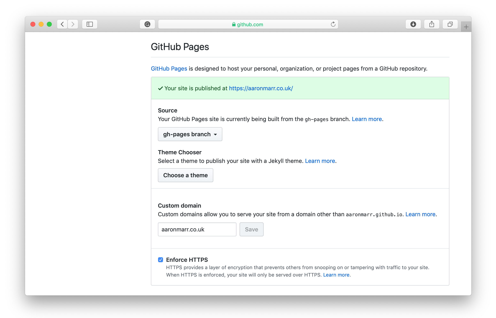
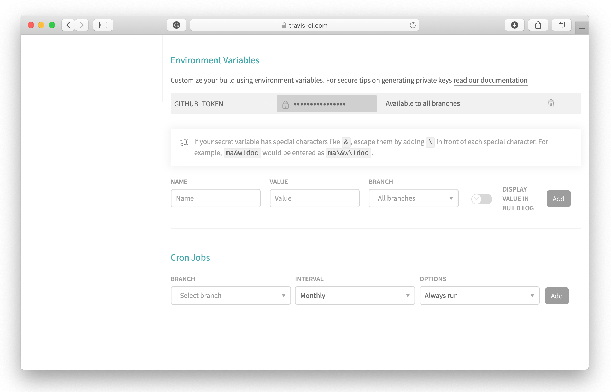
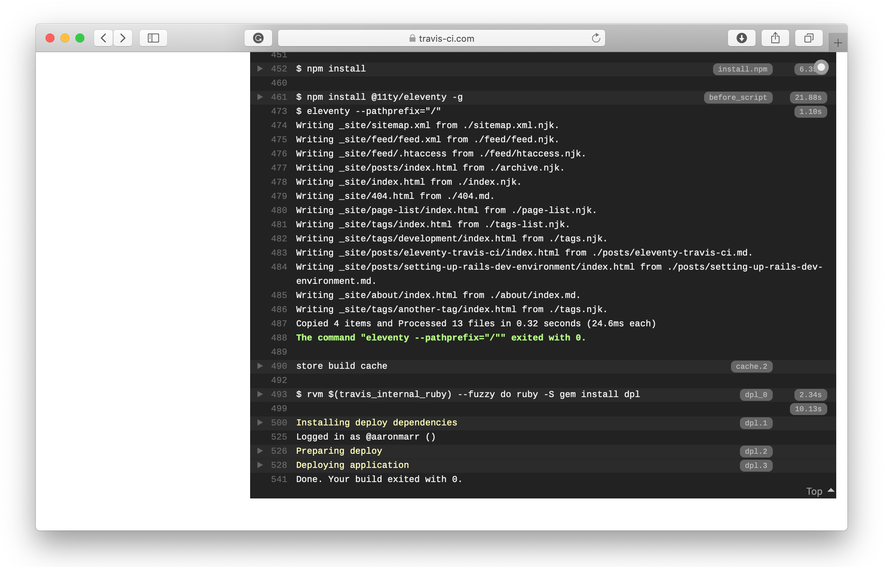

Deploying Eleventy to Github Pages using Travis CI
I've recently redesigned my website using the excellent 11ty static site generator. In this post, I'll take a look at setting up a deployment pipeline to Github Pages (Pages) using Travis CI (Travis).
The 11ty blog starter template comes with a Travis configuration file. I figured it was worth giving Travis a try for deployment. There are a few steps involved in getting Travis talking to Pages, but it's overall a relatively straightforward process.
Github forces you to use the master branch for the deployment branch for [username].github.io repositories. In my case, I wanted to specify the build branch as
master, and the deploy branch asgh-pages, so my repository name is simplyblog.
Inside the new repository, enable Pages. I'm using a custom domain name, so I set that in the settings, too.

I already had my DNS pointing to Github servers, but you should set up DNS too for your custom domain if you are using one. I won't cover that here, so please consult the Github documentation.
Set up Travis #
Travis is used to pull code from the Git repository, build it, and then push back to the Pages branch.
Sign up to Travis CI (if you're not signed up already) and grant it access to your Github account. You can specify which repositories it has access to once signed up.
As part of the authorisation/deployment process, Github requires that Travis sends an auth token. You can create the token via the develop menu in Github. You should then add this token to Travis under Travis's repository settings by creating a new environment variable. The only requirement here is that the name of the variable should match what's in the Travis yml file in your repository. In our case it's $GITHUB_TOKEN.

Let's take a look at the travis.yml configuration file now. Notice that I've set my build and deployment branches to master and gh-pages. I'm using a custom domain, and this is set using the fqdn property. I also want to deploy without a pathprefix, so I updated that accordingly.
language: node_js
node_js:
- 8
before_script:
- npm install @11ty/eleventy -g
script: eleventy --pathprefix="/"
deploy:
fqdn: aaronmarr.co.uk
local-dir: _site
provider: pages
skip-cleanup: true
github-token: $GITHUB_TOKEN # Set in travis-ci.org dashboard, marked secure
keep-history: true
target_branch: gh-pages
on:
branch: masterAt this point, you should be able to build and deploy to Github. In Travis, select "Build Now" and wait a minute or two for Travis to do it's thing. Once Travis has finished building, you'll see a success message indicating that your site is deployed.

That's all the is to deploying 11ty to Github Pages using Travis. I hope you've found this useful!